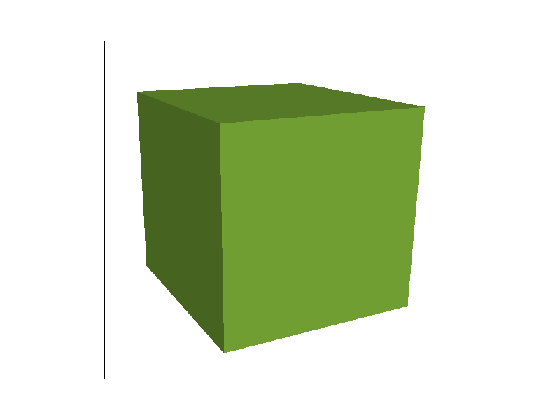

CS184/284A Spring 2025 Homework 1 Write-Up
Han Li, William Wu
Link to webpage: wu-yong-xuan.github.io/cs184/index.html
Link to GitHub repository: cal-cs184-student/sp25-hw1-team-28
Overview
In this assignment, we implmented a triangle rasterizer with a bunch of fancy features! We were able to take data coordinates of a triangle and draw them to the screen. In order to resolve the aliasing issues that occured, we implemented supersampling as an antialiasing method. In order to draw textures, we implemented barycentric coordinate interpolation to interpolate between various data points set by the vertices. Using this, we were able to find the UV coordinates for each sample in the triangle and draw colors from a texture file! To antialias the texture, we implemented bilinear interpolation and mipmap trilinear interpolation to interpolate between different resolution sets!
It was really fun seeing what went behind drawing a triangle and the amount of work needed to make something look nice. Playing a lot of video games growing up, I always saw these fancy terms like bilinear interpolation in the graphics settings and it's inspiring to finally be able to understand them. Additionally, we learned how to cry and suffer.
Task 1: Drawing Single-Color Triangles
Alright guys, so we wanna do this super cool thing called rasterizing that allows us to draw nature's best shape, the triangle, on the magic number box projector (monitor). But how do we know which pixels on the magic number box (monitor) are supposed to be inside the triangle or not!? Oh no! Here, we have a genius solution presented to us.
The general idea is that we need to know if a given pixel is inside the bounds of a triangle or not. Since it's super inefficient and also wouldn't give us the points for task 1, we won't be looping through the entire frame buffer. Instead, given the vertex coordinates of the triangle, we can calculate the bounding box. Then, we can loop through all pixels in that smallest box that fits around the triangle and check if each pixel inside is within the triangle or not, thereby making our cat video watching box (computer) happy.
Sampling and Line Tests
In order to determine if a given pixel is inside the triangle or not, we need to take our sample position (the center of the pixel sounds pretty good for now) and do some sort of magic check to see if it's in the triangle or not.
To determine this, we can take the dot product of the point \(p\) with the normal vector of the line. If it's positive, that means the point \(p\) is the same direction as the normal vector.
We repeat this for every edge on the triangle and if the sign is the same for all of them (IE: positive), then we are inside the triangle.
Whether we check if \(p \cdot n\) is all positive or all negative is dependent on the winding order of the triangle. If the triangle is winded clockwise vs counterclockwise, that could mess with the signs of our line tests in how we calculate the direction of the normal vector.
As such, we can calculate the cross product of two edges for \(p_0\) to \(p_1\) and \(p_1\) to \(p_2\). If the cross product is negative, that means the triangle winds clockwise, and counterclockwise otherwise. To simplify our code for redundancy, we simply swap two of the vertices when the cross product is negative to ensure a consistent winding order.
|
|
|
By doing this for every pixel in the bounding box and only rasterizing the pixels that satisfy all three line tests, we get a fully rasterized triangle!
Extra Credit: Optimization
But wait, I'm hearing that my doom scrolling machine (computer) is really really old and is complaining about all these computations it has to do. Specifically, why do we need to do line tests for all those empty pixels outside the triangle but still within the bounding box?
Well, I don't want my computer to go up in flames so I better come up with a better solution! The idea is to only sample the pixels inside the triangle and avoid sampling pixels outside the triangle entirely.
We can do this by computing the longest horizontal edge, iterating through it, and then iterating vertically until we reach the other edges.
This is simple to do if you sort the vertices based on their x position. Then, you can construct a \(y=mx+b\) equation to get discrete values of y for each y increase along the longest edge. If the third vertex is above the line then you iterate upwards, and downwards otherwise. You still have to do 3 line tests for each sample position, but now you eliminate having to sample points outside of the triangle.
In fact, with this method, it's possible to only do ~2 line tests for each sample position! For the row of pixels along the longest edge, you still have to do 3, but you with the \(y=mx+b\) equations calculated for the other 2 edges, you can pre calculate the amount of pixel distance required to reach it and do a discrete for loop to get there, eliminating the need to do line tests for any of the pixels in-between!
By evaluating the clock() speeds of each method, over the course of 10 runs of the dragon svg, the optimized method averaged 0.0152 seconds per render and the unoptimized method averaged 0.019 seconds.
Here are some cool images!
|
|
|
|

|
|
Task 2: Antialiasing by Supersampling
After completing task 1, we noticed jaggies in our rasterized triangles. Oh no! This is exactly what Ren warned about, our triangles are aliased. Fear not, for we know how to antialias using a method known as supersampling. Antialiasing removes frequencies outside of the lowest Nyquist window and supersampling does this by sampling points on our triangles at a higher frequency than the actual resolution and then averages nearby samples down to the real screen resolution. In order to implement this, we modified a couple functions in our rasterizer. Firstly, we increased the buffer size to accommodate the sample rate in set_sample_rate() and set_frambuffer_target() (ie. sample_buffer_size = height * width * samplerate). We then actually implemented the supersampling in rasterize_triangle(). Using the same algorithm as in task 1, we just decreased the step size to \(\frac{1}{\sqrt{sample\_rate}}\). We did this because a sample rate of \(N\) would mean \(N\) times more pixels to sample and thus \(\sqrt{N}\) times the width and height. We then compute the line tests as normal and save the color to the sample buffer if the point is within bounds. Because the sample buffer is a 1D array, the new index of a sample point would be
Where \(n\) and \(m\) range from \(0\) to \(\sqrt{sample\_rate}\) indicating the index of the subpixel sample. For a sample rate of 4, each pixel is split into a 2x2 grid. \(n=1\) and \(m=0\) would then indicate the grid element in the second row and first column. In tensor notation, this would look like Anm \(A^n_m\). After populating the sample buffer, we need to average down into the frame buffer in the function resolve_to_framebuffer(). This can be easily implemented by iterating through each x and y value corresponding to positions on the frame buffer and then iterating through the sub samples of the corresponding pixel. We averaged the red, green and blue channels of the sub samples and then created a new color with the averaged values to save to the framebuffer. Moreover, we also needed to adjust fill_pixel() function to work with a higher sample rate. We did this by iterating through the sub samples of the pixel (ie the 2x2 grid for a pixel if the sample rate is 4) and setting all the colors to the specified one.
The only data structure outside of the frame buffer that we used, was the 1D array sample buffer which stored our supersampled colors.
Using supersampling at different rates, we obtained the following images:

|
|
|
In the first image, with a sample rate of 1, we notice jaggies :( This is because there is higher frequency content that is aliased. In our second image, we have a sample rate of 4 and the image looks much better. It’s smoothed out and the jaggies are more or less gone. In the third image, it looks super smoothed with virtually no jaggies!
Task 3: Transforms
Simple matrix multiplication for 2d homogeneous coordinates for translate, scale, and rotate. Wasn't that bad, kinda just multiply the vertex coordinates w/ the matrix. Instead of the math, let's take a look at the cubeman moving around!
This week was really rough on us due to a lot of things stacking up. If you are the TA reading this, this is not your fault and I love you but I'm still sad nonetheless. Thus, we will make the cubeman orz
In order to do this, we can exploit hierarchical transformations! By “parenting” the child polygons to the parent polygons, we can create somewhat of a forward kinematics (FK) transformation. If you're interested in this, take UCBUGG! It is UC Berkeley's 3D Modeling and Animation DeCal and it's super fun! Essentially, this means that the child polygons inherit the transforms of their parent.
Let's start by moving his legs closer together by setting the translate to translate(0, 90) instead of translate(40 90).
We can then rotate the thighs to bend them a bit, and then rotate the bottom legs to make him crawl on the floor like the sad pathetic cubeman he is. Let's apply a rotate(-15) on the thigh and a rotate(-30) on the lower leg.
The legs are kinda disconnected now so let's translate them into place and do the same with the other leg.
Looking good!
Now, let's make him act like the sub he is by bending his torso over. If you are reading this, I am very not sorry. In order to do this, we need to scale his body a bit so it looks more 3d and less like he's facing the front.
Let's make things easier for ourselves by parenting the arms and head to the torso. This way we can rotate the torso into place and the rest of the limbs will be in a nicer position to work with.
Repeat the previous steps to move the arm in place. You can do this, I believe in you! This will be an exercise to the reader.
|
|
|
Task 4: Barycentric coordinates
Woohoo, we have antialiasing and transforms, but our images still feel like they are missing something. We know what you're thinking, that something is definitely interpolation and interpolated colors. In order to implement color interpolation, we used barycentric coordinates . Barycentric coordinates are a coordinate system defined for triangles, by triangles and of triangles (only the first is true). They are a coordinate system that specifies points relative to their distance to each vertex using three values \((\alpha, \beta, \gamma\)) . It can be thought of as interpolating between the altitudes of the triangle. If we label the vertices \(V_A\), \(V_B\), and \(V_C\), then \(\alpha = 0.5\) represents a line perpendicular to the altitude from \(V_A\) such that the distance from the BC edge to the intersection point of the line and the altitude is \(1 - 0.5\) times that of the altitude. For this coordinate system, all the coordinates must add up to 1.
For a point to be inside the triangle, all three coordinates must be positive. When this is true, one can also think of barycentric coordinates as proportional areas. Drawing lines from the point to each vertex, the proportional area of the section opposite a vertex is equal to the barycentric coordinate corresponding to the vertex.
Here's a couple of brief examples to demonstrate barycentric coordinates:
|
|
|
Given the vertex coordinates in cartesian space, we can calculate the barycentric coordinates using the following relations:
To interpolate the color of a triangle, we can set each vertex to be a specific color and interpolate within the triangle using these coordinates. The coordinates act as the weights of each vertex meaning that \(\alpha = 0.03\) corresponds to the color of \(V_A\) contributing to 30% of the final color.
This is most easily seen for vertices with colors red, green and blue, because the barycentric coordinates directly map to the colors. If we have \((\alpha, \beta, \gamma) =(0.2,0.4,0.4)\) then we obtain an RGB color of \((R,G,B)=(0.2,0.4,0.4)\)
Task 5: "Pixel sampling" for texture mapping
Our triangle do be looking kinda boring though. I want more than just this weak and disgusting flat colors. The world deserves more than just a single RGB value. I want pictures, art, creative expression! I want to drown in a world of bubblegum and rainbows! Ok, maybe not the last one. The point is, I want to have texture files be displayed instead of solid colors. Thus, we implement pixel sampling in the texture file!
Nearest Neighbor Pixel Sampling
First, we want to be able to find the UV coordinate that our given sample pixel occupies. Since we don't know the UV coordinate of our sample pixel, we'll instead have to do some fancy math. First, we calculate the barycentric coordinates alpha, beta, and gamma to see what percent inside the triangle we are. Then, using those weights, we can calculate the percentage UV coordinates we have given the UV coordinates of each vertex. With this UV interpolation, we can then round the nearest texel pixel and sample the color there.
Bilinear Sampling
Nearest neighbor sampling is cool and all, but what if I don't like my neighbors? That's where bilinear sampling comes in. Bilinear sampling interpolates the 4 nearest neighboring texels to more smoothly approximate the true color of the texel.
In other words, we find the 4 texels (sampled at the center of the texel) that uniquely bind the UV sample coordinate. Then, we interpolate between the 4 texels to get the color of the sample location.
Why use one over the other?
Most of the time, pixel coordinates will not map 1 to 1 to texel coordinates. Multiple texels can occupy a single pixel, and multiple pixels can occupy a single texel. In order to combat this, bilinear interpolation provides a more accurate method to get the color by getting a weighted average between each “contributing” texel compared to nearest neighbor sampling. Because of this, it greatly reduces the pixelated effect that one normally sees when using nearest neighbor sampling with low resolution texture maps. In a low resolution texture map, more screen pixels occupy a single texel, and thus causes a really square and pixelated effect when using nearest neighbor sampling.
| Nearest Neighbor Sampling | Bilinear Interpolation |
|---|---|
.png)
|
.png)
|
.png)
|
.png)
|
.png)
|
.png)
|
.png)
|
.png)
|
Task 6: "Level Sampling" with mipmaps for texture mapping
Your OC stands in the back of the image under a street lamp, their cape flowing majestically, but oh no, they're horribly aliased! All that hard work you put into making the most high definition texture you could afford was all for naught. That 1048576 by 1048576 pixel texture just won't come out nicely. Fret no longer, my child, for we have the solution. That solution is mipmap levels (hooray, the minecraft video settings options finally make sense). For only €29.99, you can get mipmap levels in your home, but wait, if you call in the next 10 minutes, we will throw in a second one and a RTX 5090 Nvidia graphics card for free! What are mipmap levels? Oho, I'm glad you asked.
To answer what mipmaps are, we must consider texture coordinates. Sometimes, a single pixel has contributions from many texels, and sometimes it has contributions from only one. Does this sound familiar? This is just aliasing from task 1! We want to remove frequencies above the Nyquist frequency as well, but the texel frequency changes depending on the pixel. For each sample, we need a texel frequency that matches the screen resolution. Thus, to decide how much to low pass filter and downsample, we need something to calculate the level of minification we need to apply to the texture. A level you say? Well, there's this little thing called mipmap levels that does exactly this. To do this, we low-pass filter the texture image, downsample it and then store the lower resolution texture file. We then do this again and again recursively until we have a bunch of texture files with successively lower max signal frequencies. Once we have that, we need only to find the mipmap level of each pixel to properly display the antialiased texture. To do this we can calculate the mip hierarchy level, \(D=log_2 L\), where \(D\) is the number of times you halve the resolution. \(L\) is defined as follows:
We calculate this \(L\) by looking at the UV coordinates of the current pixel, as well as the pixel at x+1 and the pixel at y+1. We can calculate the distance between the original point and one of the other pixels in UV space and take the largest distance (ie. spanning the largest number of texels) to get out \(L\), and by extension, our mip hierarchy level. There’s a couple different ways to sample the level and \(D\) because our mipmap levels are quantized. We implemented three methods: no level sampling, we sample from the zeroth mipmap level (\(D = 0\)), nearest \(D\) sampling (integer \(D\)), and linear interpolation (continuous \(D\)).
Level Sampling
The \(D\)’s we calculate are not integers. So, what do we do to find the level we need? The simplest way to do this is to just use the nearest integer level and use that. This is known as nearest \(D\) sampling. A little more complicated is the linear interpolation of \(D\). For some non integer \(D\), we can get the two closest mipmap levels and interpolate between them. For each mipmap level, we can sample the texture in multiple ways as described in task 5 as well. We do this by taking the floor(D) and the ceil(D) and using the sampling functions on it. We then interpolate between the two colors based on our fractional \(D\) value.
Sampling techniques
Wow, we learned so many different sampling techniques, how cool. Ren would be (not) proud of us. We implemented pixel sampling, level sampling, and supersampling. Pixel sampling has the greatest speed, least memory usage and worst antialiasing power. Level sampling is faster than supersampling, but slower than pixel sampling. It also has the most memory usage and antialiasing power better than pixel sampling and worse than supersampling. Supersampling is the slowest, but best at antialiasing. In terms of memory usage, it sits right between the other two methods. As one can see, each method has its drawbacks and depending on the use case, one may be preferred over another.
| Bilinear Interpolation | Nearest Neighbor Interpolation |
|---|---|
.png)
|
.png)
|
.png)
|
.png)
|
.png)
|
.png)
|